Guia de São Paulo
PAULICEIA
[SP]
São Paulo é muito mais do que você imagina.
Um guia para descobrir os lugares, histórias e experiências que fazem a cidade ser desvairada.
Explorar a Pauliceia
Role
pra baixo
↓
pra baixo
↓
Descubra
O que você
quer explorar?
Rolês de todo tipo espalhados pela cidade e região. Filtra pelo que te anima.
Ver todos os lugares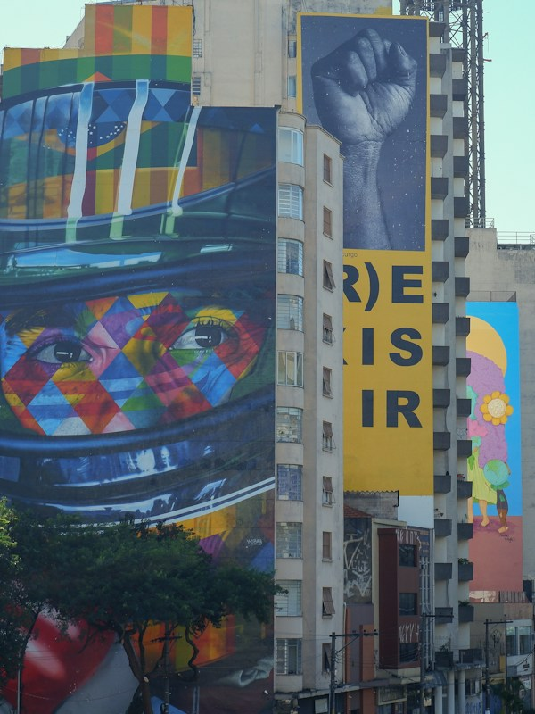
01Arte & CulturaMuseus, galerias, teatros e grafite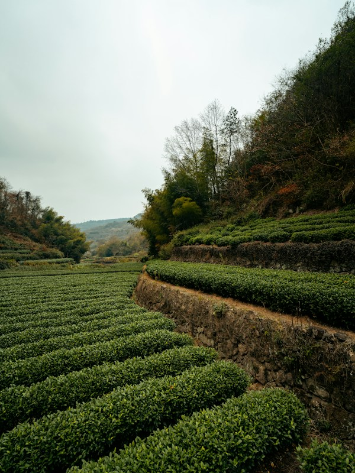
02NaturezaTrilhas, represas e mata atlântica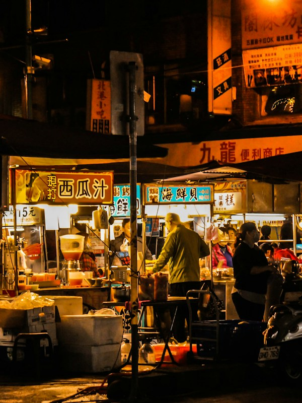
03GastronomiaFeiras, restaurantes e sabores únicos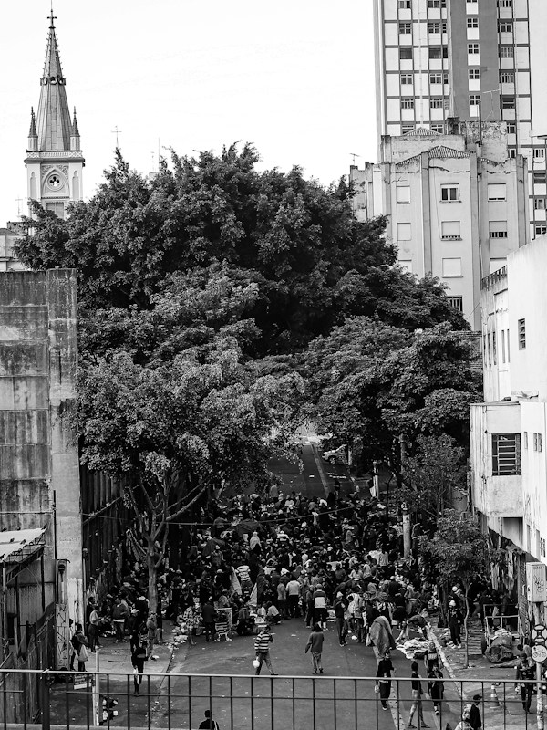
04EventosShows, festivais e programação cultural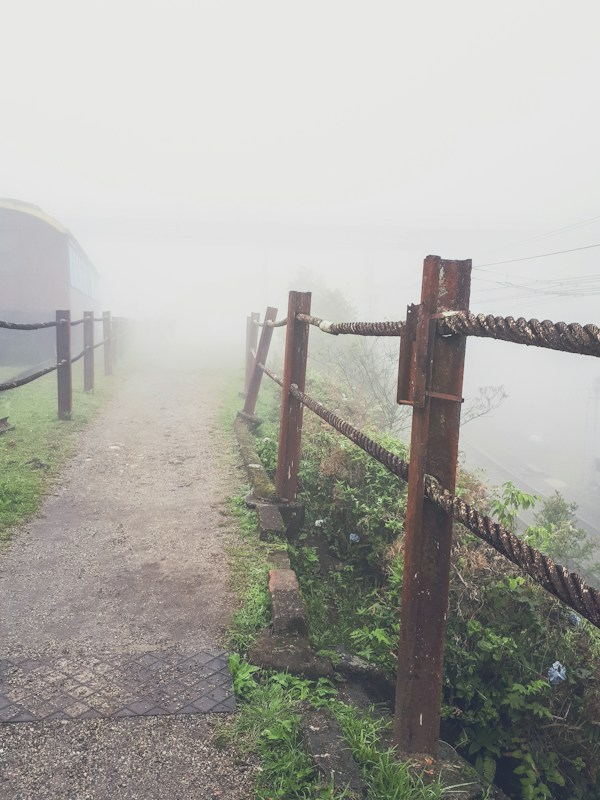
05Bate-voltaEscapadas de fim de semana perto de SP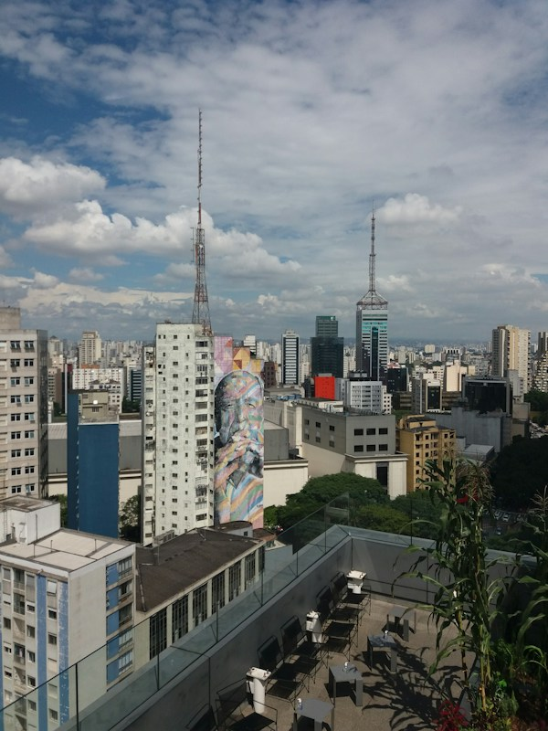
06HistóriaPatrimônios, memórias e arquitetura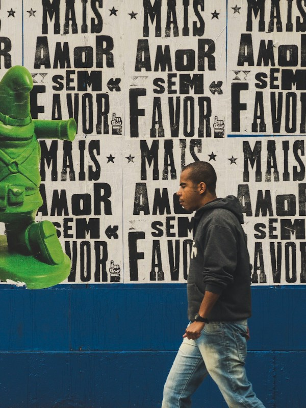
07FotografiaCenários, luz e locações para fotos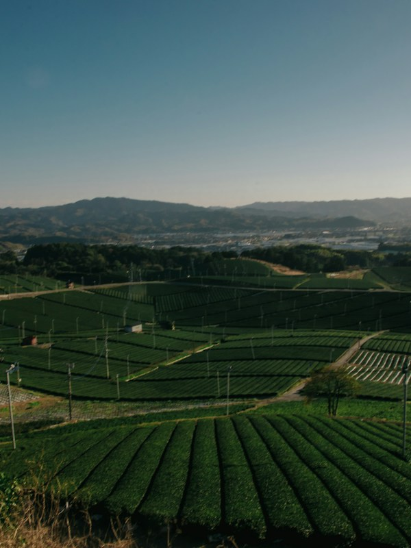
08Lugares escondidosCantos pouco conhecidos da cidadeLugares em destaque
Ver todos os lugares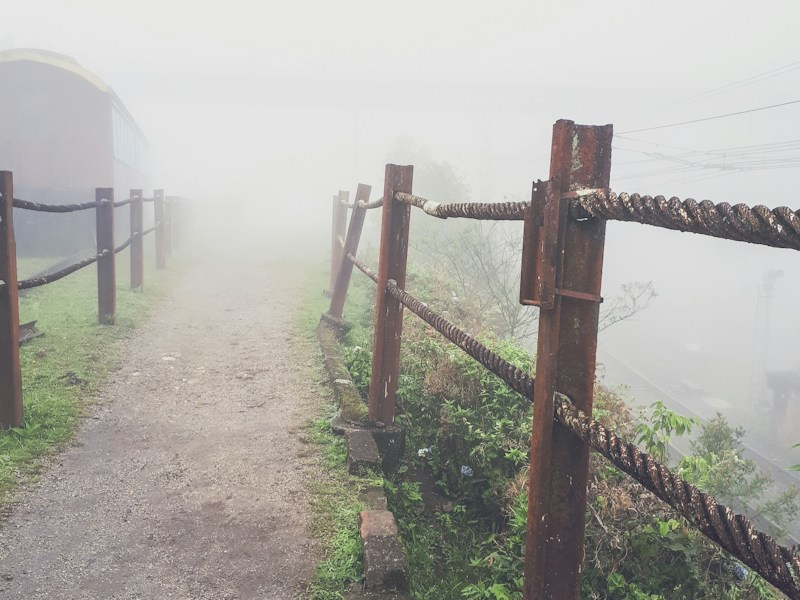
Estação da Luz → ParanapiacabaUma vila inglesa escondida entre a serra e a neblina.→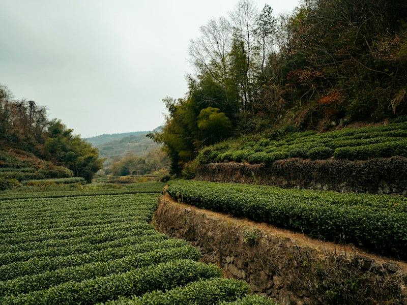
Colônia — ParelheirosUma colônia japonesa no extremo sul de SP com ryokans, feiras de orgânicos e estradas de terra entre hortas. →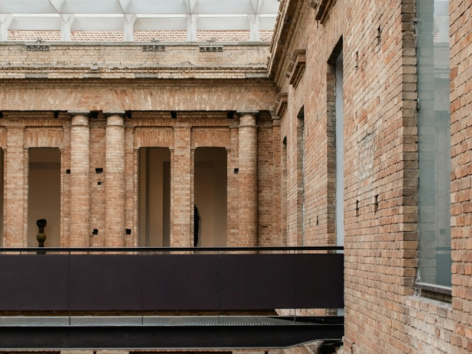
SESC InterlagosComplexo cultural premiado às margens da represa Guarapiranga — shows, exposições e vista épica. →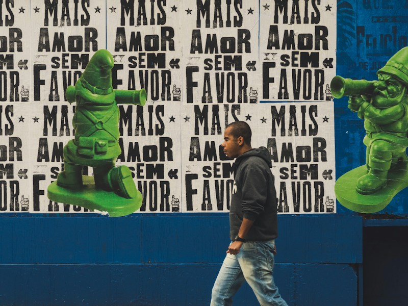
Embu das ArtesCidade colonial a 28km de SP com a maior feira de artesanato do país. O fim de semana perfeito. →Mapa interativo